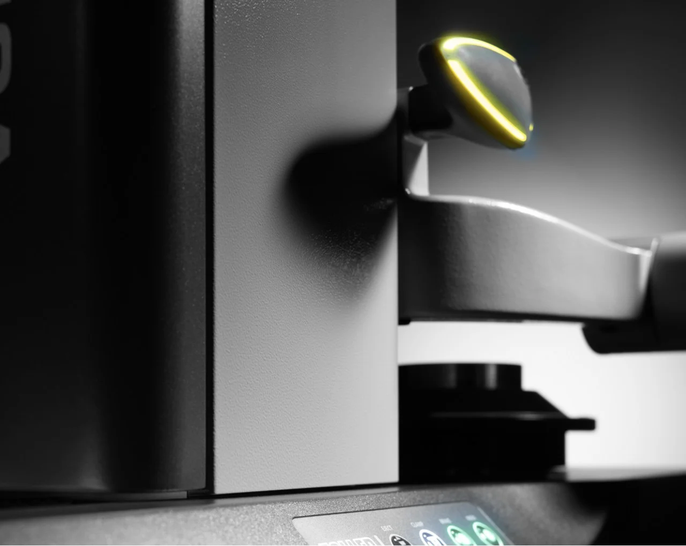
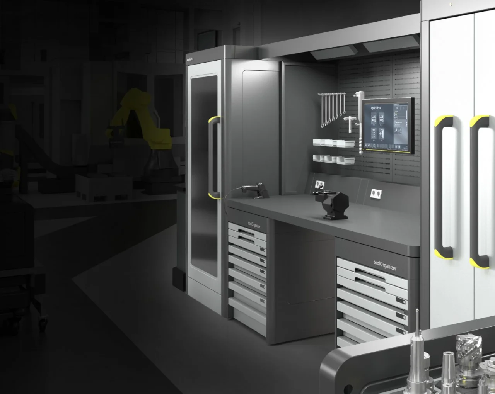
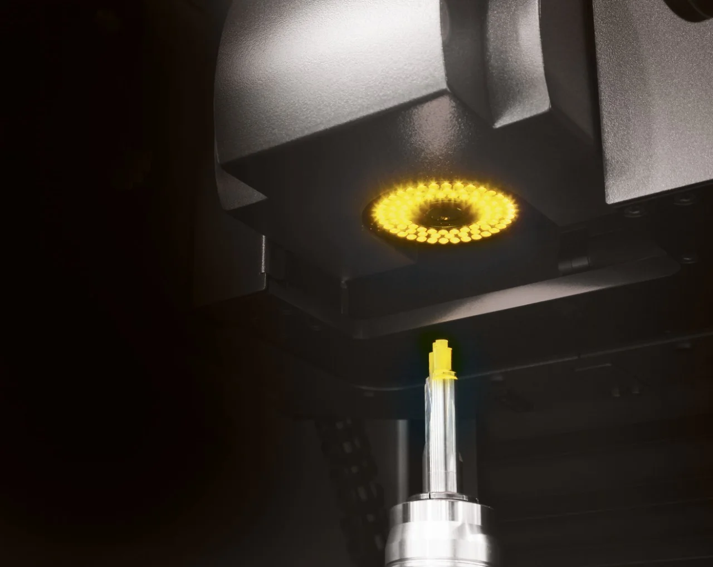
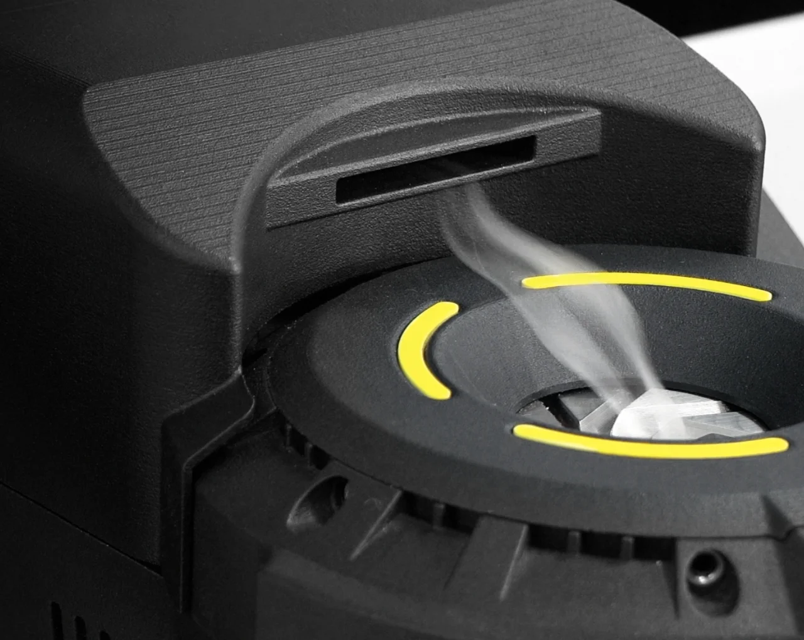
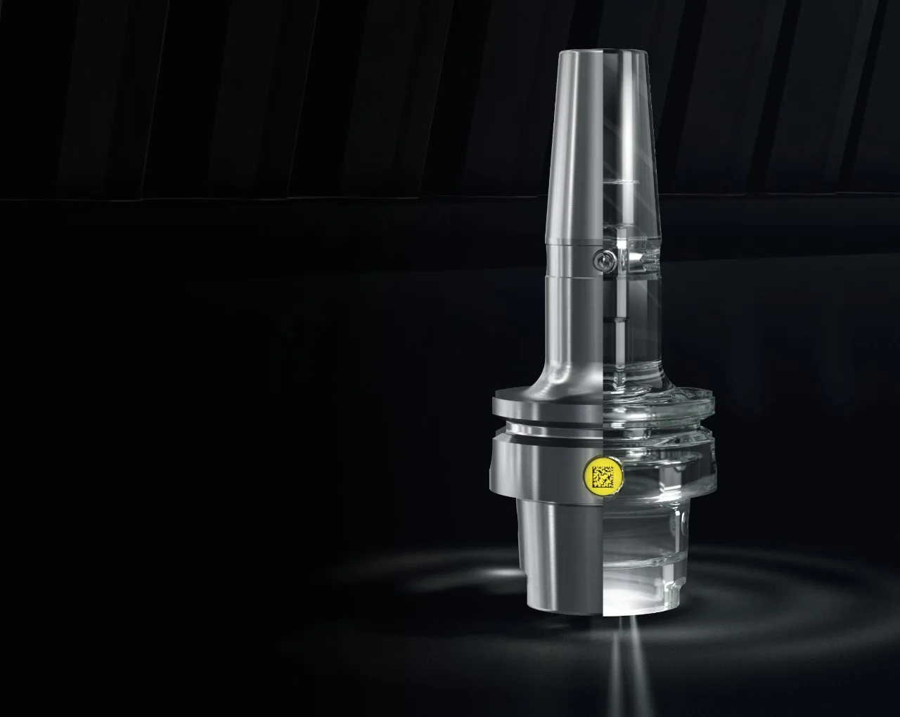
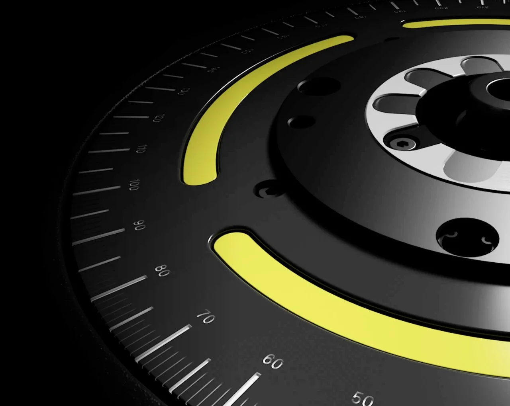

Bir çözümle başlayın – Bir sisteme adım atın.


Takım yönetimi
Takım depolama, yazılım, hatasız
veri aktarımı: takımlarınızdan ve takım
verilerinizden daha fazlasını elde edin.
Daha fazla bilgi


Takımlar için sıcak geçme teknolojisi
Takımların rekor sürede sıcak geçme ile
bağlanması ve çözülmesi.
Otomasyon
Takımların ön ayarı, ölçümü ve muayenesinden takım süreçlerinizin
tam otomasyonuna kadar – ZOLLER'in çözümü var.

Tooling Solutions
»idChip«'li takım tutucu: dijital üretiminiz için
mükemmel arayüz.

Takım balans teknolojisi
İş millerini koruyun, kaliteyi güvenceye alın:
piyasadaki en iyi balans cihazlarıyla.